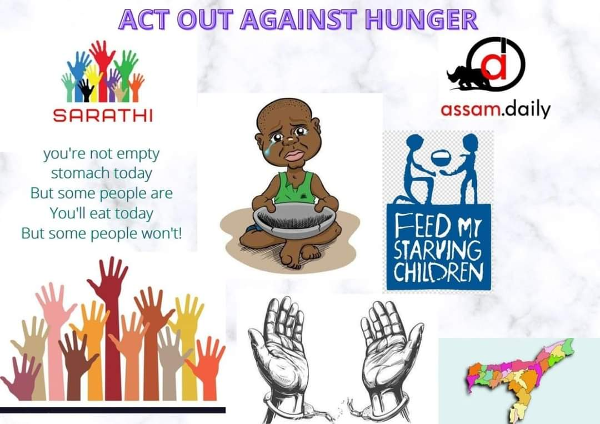

HUNGRY?! GRAB A SNICKER!!
Some want to grab Sniker but can’t even afford a mere bread, how can they grab one?
Ask some of the below cited questions to yourself and see if my answer matches yours.
You enjoying yourself with your family?
Are you enjoy being in love?
Are you enjoying hanging out with your friends?
Are you enjoying eating biriyanis, momos, or any food that takes you to cloud 9?
My answer is, because your stomach is sufficiently contained, and when not, you can afford to fill it.
But some are not as fortunate as you.
According to FAO estimates in ‘The State of Food Security and Nutrition in the World, 2020 report,
1. 189.2 million people are undernourished in India. By this measure 14% of the population is undernourished in India.
2. Also, 51.4% of women in reproductive age between 15 to 49 years are anaemic.
3. Further according to the report 34.7% of the children aged under five in India are stunted (too short for their age), while 20% suffer from wasting, meaning their weight is too low for their height.
4. Malnourished children have a higher risk of death from common childhood illnesses such as diarrhea, pneumonia, and malaria.
5. The Global Hunger Index 2019 ranks India at 102 out of 117 countries on the basis of three leading indicators -- prevalence of wasting and stunting in children under 5 years, under 5 child mortality rate, and the proportion of undernourished in the population.
Once Mahatma Gandhi said,” There are people in the world so hungry, that God cannot appear to them except in the form of bread.”
1. People steal/rob others to fill their stomachs. Some enter the dirty world of crime just to have more money and why is that, to fill their Stomach. Reason is HUNGER.
2. Our youth populated country, have the most number of poor children. They suffer malnutrition and coexisting diseases. Reason is HUNGER.
3. We are unable to nurture our Nation’s Development process because of various factors like Poverty, bad outlook as a nation, less tourist attractions, less youth to do physical works, diseases due to malnutrition. Reason is HUNGER.
4. Food insecurity and hunger are associated with an array of developmental problems in multiple domains, including malnutrition, anxiety, depression, impulse control problems and violence. Reason is HUNGER.
5. Being impulsive, makes an individual to take misdemeanour decision. And this leads to vulnerable crimes. Reason is HUNGER.
Most of the issues ends up on one thing and that is “HUNGER”. People have to understand that whatever we do, whatever we go through all ends up to one thing, to have a stuffed stomach.
We have enormous of Organizations, NGO's, and foundations working day and night for hunger issue. Then, why still some people in India sleep empty stomach. Have you even thought about this?
There are so many questions and facts which are unanswered and unexplored. This is because we don't have the basic awareness about HUNGER!
Even if to an extent hunger issue is solved, we can notice a great change in other sectors of societies too.
Let's promise to ourselves to bring at least 1% of the change in the society from our part. Being a part of the society together we can bring a long-lasting change!
